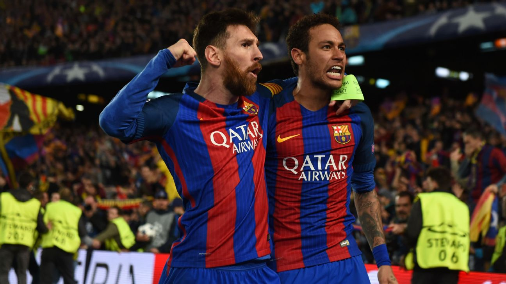

Somos dois amigos que compartilham uma grande paixão: o Futebol. Ser atleta não é apenas competir. É aprender a ter disciplina, respeito, responsabilidade e trabalho em equipe. Todos os dias buscamos evoluir, tanto dentro quanto fora de campo.
Nossa Rotina
Durante a semana conciliamos os estudos com os treinos. Nem sempre é fácil, mas sabemos que a dedicação faz toda a diferença. Nos treinos, buscamos melhorar nossa técnica, condicionamento físico e trabalho em equipe. Também entendemos que a alimentação, o descanso e a hidratação são fundamentais para ter um bom desempenho e evitar lesões. Mesmo nos dias mais difíceis, continuamos treinando e nos esforçando para evoluir.
Nossos Objetivos
Nosso objetivo é crescer como atletas e como pessoas, aprendendo com cada desafio e comemorando cada conquista ao longo do caminho, queremos representar nossa escola da melhor maneira possível, sempre dando o máximo treinios e nas competições. Sabemos que o esforço de hoje será aconquista de amanhã.
Nossas Conquistas
-Participação em campeonatos escolares;
-Desenvolvimento da disciplina e do trabalho em equipe; -Superação de desafios dentro e fora de campo; -Evolução constante nos treinos.